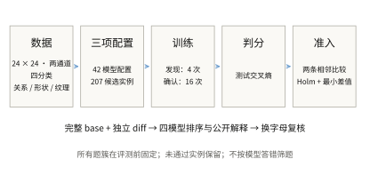
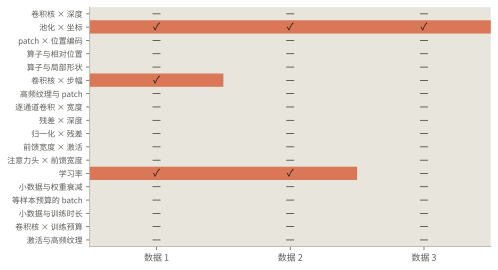
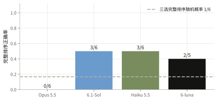

分类首批：6 道通过确认的排序题
18 个题簇、54 个数据实例全部完成测试；6 道主问题通过独立确认，覆盖池化与坐标、卷积步幅、学习率三类。
- 数据 受控合成图像
- 题型 三选完整排序
- 训练重复 4 次发现 + 16 次确认
- 计算 360-1 / ophis
从受控图像构造可复现的分类任务

图像为 24×24、两通道、四分类。五种数据设置覆盖相对位置、形状、两档纹理频率，以及只有 64 个训练样本的形状任务。18 个题簇在三个数据 seed 上形成 54 个实例，去重后有 207 个候选配置；算子、block、连接和训练超参数均包含完整局部对照。卷积网络、分块注意力网络和多层感知机之间的比较保留各自原生配方，不解释为单个算子的纯效应。
排序使用独立测试集上的交叉熵，越低越好。分类正确率、训练交叉熵、分布外样本和数据捷径探针用于解释差异，不能事后替换排序指标。
207 个候选、16 个确认训练 seed，共 3312 次训练全部核验通过。五个预先指定的 seed 200 checkpoint 已独立复算；混淆矩阵展示这五次固定训练。另图保留全部 16 个 seed：常规形状配置的测试交叉熵（CE）为 0.4502 ± 0.4977，明显比单张混淆矩阵呈现的表现更不稳定。分布外测试（OOD）用于检查泛化，不参与排序。


未通过确认的题目也保留在覆盖图中
发现阶段只用验证集固定顺序。确认阶段使用独立的 16 个训练 seed，对两条相邻比较做单侧配对符号检验。Holm 校正覆盖本批全部 108 条冻结假设，校正 p ≤ 0.05，且平均差值至少 0.005。分类首批、分类补充批和生成批分别定义检验族；未声称跨批联合错误率仍为 5%。它检验训练 seed 上差异方向的稳定性，不是期望均值差的显著性检验。

全部相邻差值与拒绝原因
| 实例 | 平均差值 | 校正 p | 通过 |
|---|---|---|---|
| 卷积核 × 深度 · 841901 | 0.020846 | 0.0016479 | 是 |
| 卷积核 × 深度 · 841901 | 0.006517 | 1 | 否 |
| 卷积核 × 深度 · 841902 | 0.012408 | 0.70193 | 否 |
| 卷积核 × 深度 · 841902 | 0.0036456 | 1 | 否 |
| 卷积核 × 深度 · 841903 | 0.033125 | 0.0016479 | 是 |
| 卷积核 × 深度 · 841903 | 0.0051603 | 0.70193 | 否 |
| 池化 × 坐标 · 841901 | 0.30803 | 0.0016479 | 是 |
| 池化 × 坐标 · 841901 | 1.0537 | 0.0016479 | 是 |
| 池化 × 坐标 · 841902 | 0.30765 | 0.0016479 | 是 |
| 池化 × 坐标 · 841902 | 1.0403 | 0.0016479 | 是 |
| 池化 × 坐标 · 841903 | 0.26044 | 0.0016479 | 是 |
| 池化 × 坐标 · 841903 | 1.0749 | 0.0016479 | 是 |
| patch × 位置编码 · 841901 | 0.0123 | 1 | 否 |
| patch × 位置编码 · 841901 | 0.73688 | 0.0016479 | 是 |
| patch × 位置编码 · 841902 | 0.032158 | 1 | 否 |
| patch × 位置编码 · 841902 | 0.7237 | 0.0016479 | 是 |
| patch × 位置编码 · 841903 | 0.040585 | 1 | 否 |
| patch × 位置编码 · 841903 | 0.68362 | 0.0016479 | 是 |
| 算子与相对位置 · 841901 | 0.0062075 | 1 | 否 |
| 算子与相对位置 · 841901 | 0.11943 | 0.0016479 | 是 |
| 算子与相对位置 · 841902 | 0.0011027 | 1 | 否 |
| 算子与相对位置 · 841902 | 0.12256 | 0.0016479 | 是 |
| 算子与相对位置 · 841903 | -0.024265 | 1 | 否 |
| 算子与相对位置 · 841903 | 0.091957 | 0.0016479 | 是 |
| 算子与局部形状 · 841901 | 0.63454 | 0.15469 | 否 |
| 算子与局部形状 · 841901 | 2.7752 | 0.0016479 | 是 |
| 算子与局部形状 · 841902 | 0.63954 | 0.70193 | 否 |
| 算子与局部形状 · 841902 | 3.3873 | 0.0016479 | 是 |
| 算子与局部形状 · 841903 | 0.30739 | 1 | 否 |
| 算子与局部形状 · 841903 | 3.4485 | 0.0016479 | 是 |
| 卷积核 × 步幅 · 841901 | 1.2354 | 0.0016479 | 是 |
| 卷积核 × 步幅 · 841901 | 0.15179 | 0.021011 | 是 |
| 卷积核 × 步幅 · 841902 | 0.99934 | 0.70193 | 否 |
| 卷积核 × 步幅 · 841902 | 0.38778 | 0.70193 | 否 |
| 卷积核 × 步幅 · 841903 | 1.1589 | 0.0016479 | 是 |
| 卷积核 × 步幅 · 841903 | 0.22855 | 0.70193 | 否 |
| 高频纹理与 patch · 841901 | -0.0049795 | 1 | 否 |
| 高频纹理与 patch · 841901 | -0.0011394 | 1 | 否 |
| 高频纹理与 patch · 841902 | -0.00049726 | 1 | 否 |
| 高频纹理与 patch · 841902 | 0.0079832 | 1 | 否 |
| 高频纹理与 patch · 841903 | -0.0034923 | 1 | 否 |
| 高频纹理与 patch · 841903 | 0.0039505 | 1 | 否 |
| 逐通道卷积 × 宽度 · 841901 | 0.090867 | 0.0016479 | 是 |
| 逐通道卷积 × 宽度 · 841901 | 0.47245 | 1 | 否 |
| 逐通道卷积 × 宽度 · 841902 | 0.090825 | 0.021011 | 是 |
| 逐通道卷积 × 宽度 · 841902 | 0.26757 | 0.70193 | 否 |
| 逐通道卷积 × 宽度 · 841903 | 0.075968 | 0.70193 | 否 |
| 逐通道卷积 × 宽度 · 841903 | 0.53839 | 0.15469 | 否 |
| 残差 × 深度 · 841901 | -0.0050656 | 1 | 否 |
| 残差 × 深度 · 841901 | 0.67354 | 0.15469 | 否 |
| 残差 × 深度 · 841902 | -0.049548 | 1 | 否 |
| 残差 × 深度 · 841902 | 0.60869 | 1 | 否 |
| 残差 × 深度 · 841903 | -0.011454 | 1 | 否 |
| 残差 × 深度 · 841903 | 0.61639 | 0.15469 | 否 |
| 归一化 × 残差 · 841901 | 0.12235 | 1 | 否 |
| 归一化 × 残差 · 841901 | 0.80339 | 0.0016479 | 是 |
| 归一化 × 残差 · 841902 | -0.076891 | 1 | 否 |
| 归一化 × 残差 · 841902 | 1.0037 | 0.021011 | 是 |
| 归一化 × 残差 · 841903 | -0.30573 | 1 | 否 |
| 归一化 × 残差 · 841903 | 0.90314 | 0.021011 | 是 |
| 前馈宽度 × 激活 · 841901 | 0.05843 | 1 | 否 |
| 前馈宽度 × 激活 · 841901 | 0.36973 | 0.15469 | 否 |
| 前馈宽度 × 激活 · 841902 | 0.17709 | 1 | 否 |
| 前馈宽度 × 激活 · 841902 | 0.075818 | 0.70193 | 否 |
| 前馈宽度 × 激活 · 841903 | 0.29068 | 0.15469 | 否 |
| 前馈宽度 × 激活 · 841903 | 0.27501 | 1 | 否 |
| 注意力头 × 前馈宽度 · 841901 | 0.03043 | 0.70193 | 否 |
| 注意力头 × 前馈宽度 · 841901 | 0.054706 | 1 | 否 |
| 注意力头 × 前馈宽度 · 841902 | 0.050947 | 0.15469 | 否 |
| 注意力头 × 前馈宽度 · 841902 | 0.11809 | 1 | 否 |
| 注意力头 × 前馈宽度 · 841903 | -0.0257 | 1 | 否 |
| 注意力头 × 前馈宽度 · 841903 | 0.14386 | 0.70193 | 否 |
| 学习率 · 841901 | 0.3285 | 0.021011 | 是 |
| 学习率 · 841901 | 0.77903 | 0.0016479 | 是 |
| 学习率 · 841902 | 0.32813 | 0.021011 | 是 |
| 学习率 · 841902 | 0.94162 | 0.0016479 | 是 |
| 学习率 · 841903 | -0.23126 | 1 | 否 |
| 学习率 · 841903 | 1.1106 | 0.0016479 | 是 |
| 小数据与权重衰减 · 841901 | 1.5599 | 1 | 否 |
| 小数据与权重衰减 · 841901 | -0.6796 | 1 | 否 |
| 小数据与权重衰减 · 841902 | 4.2197 | 1 | 否 |
| 小数据与权重衰减 · 841902 | 0.69097 | 1 | 否 |
| 小数据与权重衰减 · 841903 | 2.9834 | 0.70193 | 否 |
| 小数据与权重衰减 · 841903 | -0.42863 | 1 | 否 |
| 等样本预算的 batch · 841901 | 0.03202 | 0.70193 | 否 |
| 等样本预算的 batch · 841901 | -0.042807 | 1 | 否 |
| 等样本预算的 batch · 841902 | -0.0063919 | 1 | 否 |
| 等样本预算的 batch · 841902 | 0.071612 | 0.021011 | 是 |
| 等样本预算的 batch · 841903 | 0.0065668 | 1 | 否 |
| 等样本预算的 batch · 841903 | 0.020971 | 0.70193 | 否 |
| 小数据与训练时长 · 841901 | 0.076746 | 1 | 否 |
| 小数据与训练时长 · 841901 | 3.695 | 1 | 否 |
| 小数据与训练时长 · 841902 | 0.032157 | 1 | 否 |
| 小数据与训练时长 · 841902 | 4.1227 | 1 | 否 |
| 小数据与训练时长 · 841903 | 0.28135 | 1 | 否 |
| 小数据与训练时长 · 841903 | 4.3178 | 0.15469 | 否 |
| 卷积核 × 训练预算 · 841901 | 0.0023148 | 1 | 否 |
| 卷积核 × 训练预算 · 841901 | 0.10666 | 0.0016479 | 是 |
| 卷积核 × 训练预算 · 841902 | -0.008814 | 1 | 否 |
| 卷积核 × 训练预算 · 841902 | 0.13306 | 0.0016479 | 是 |
| 卷积核 × 训练预算 · 841903 | -0.013394 | 1 | 否 |
| 卷积核 × 训练预算 · 841903 | 0.14813 | 0.0016479 | 是 |
| 激活与高频纹理 · 841901 | 0.086734 | 1 | 否 |
| 激活与高频纹理 · 841901 | -0.068322 | 1 | 否 |
| 激活与高频纹理 · 841902 | -0.044545 | 1 | 否 |
| 激活与高频纹理 · 841902 | 0.13124 | 1 | 否 |
| 激活与高频纹理 · 841903 | 0.086651 | 1 | 否 |
| 激活与高频纹理 · 841903 | -0.0059294 | 1 | 否 |
完整排序和换字母后的稳定性分开计算
所有通过确认的题都进入四模型评测。重复数据实例和字母置换不是独立新题，下面不报告独立二项置信区间。API 缺失单列；单轮内已返回的错误或格式失败不会重抽。
首次评测遇到接口过载与不完整错误流，原记录独立保留。修复传输后，对同一题表的全部四模型、主问题和置换题进行一次预先声明的完整复评。下图与逐题审核显示复评；首次成绩列在下表，两轮不择优合并。
首次评测：完整排序正确 / 已获得回答 / 预定题数
| 模型 | 主问题 | 公开记录 |
|---|---|---|
| Opus 5.5 | 0 / 6 / 6 | 首次回答 |
| 6.1-Sol | 1 / 4 / 6 | 首次回答 |
| Haiku 5.5 | 3 / 6 / 6 | 首次回答 |
| 6-luna | 1 / 4 / 6 | 首次回答 |

本批一直输出最常见字母顺序可得 33.3%。这是准入后标签分布的事后描述，不能与事先固定的随机基线混同。
| 模型 | 主问题完成 | 已有回答模板宏平均 | 可解析回答的两两一致度 | 换字母：一致 / 有效配对 |
|---|---|---|---|---|
| Opus 5.5 | 6/6 | 0.0%（3/3 簇） | 66.7%（6 题） | 6/6 |
| 6.1-Sol | 6/6 | 33.3%（3/3 簇） | 83.3%（6 题） | 4/5 |
| Haiku 5.5 | 6/6 | 33.3%（3/3 簇） | 66.7%（6 题） | 4/6 |
| 6-luna | 5/6 | 33.3%（3/3 簇） | 53.3%（5 题） | 2/4 |
完整复评中，Opus 为 0/6，6.1-Sol 和 Haiku 均为 3/6，6-luna 为 2/5，另缺 1 道主问题的接口回答。池化与坐标比较需要分清可表达什么、在 300 步内实际学到什么；学习率比较也不能直接套用默认值更稳的经验。只有三个题簇，且同簇数据实例相关，这些结果不足以确定通用模型能力排名。
预先固定的表面规则
{
"more_parameters": {
"admitted": 6,
"ordered": 4,
"tie": 2,
"not_applicable": 0,
"correct": 3,
"comparable_pairs": 12,
"correct_pairs": 11,
"accuracy_when_ordered": 0.75,
"accuracy_on_comparable_pairs": 0.9166666666666666
},
"more_training_steps": {
"admitted": 6,
"ordered": 0,
"tie": 6,
"not_applicable": 0,
"correct": 0,
"comparable_pairs": 0,
"correct_pairs": 0,
"accuracy_when_ordered": null,
"accuracy_on_comparable_pairs": null
},
"deeper_model": {
"admitted": 6,
"ordered": 0,
"tie": 6,
"not_applicable": 0,
"correct": 0,
"comparable_pairs": 0,
"correct_pairs": 0,
"accuracy_when_ordered": null,
"accuracy_on_comparable_pairs": null
},
"larger_kernel": {
"admitted": 6,
"ordered": 0,
"tie": 6,
"not_applicable": 0,
"correct": 0,
"comparable_pairs": 2,
"correct_pairs": 1,
"accuracy_when_ordered": null,
"accuracy_on_comparable_pairs": 0.5
},
"residual": {
"admitted": 6,
"ordered": 0,
"tie": 6,
"not_applicable": 0,
"correct": 0,
"comparable_pairs": 0,
"correct_pairs": 0,
"accuracy_when_ordered": null,
"accuracy_on_comparable_pairs": null
},
"smaller_patches": {
"admitted": 6,
"ordered": 0,
"tie": 0,
"not_applicable": 6,
"correct": 0,
"comparable_pairs": 0,
"correct_pairs": 0,
"accuracy_when_ordered": null,
"accuracy_on_comparable_pairs": null
}
}正确排序和可靠解释需要分别核验
审核分别检查代码事实、关键因素、因果表述、相邻比较覆盖和答案一致性。可用坐标不保证已学出精确质心；正确排序也可能伴随感受野、参数量或初始权重的事实错误。解释中的机制主张必须与完整局部对照相符。
| 模型 | 代码事实支持 | 关键因素支持 | 因果表述不成立 |
|---|---|---|---|
| Opus 5.5 | 1/6 | 0/6 | 1/6 |
| 6.1-Sol | 6/6 | 3/6 | 0/6 |
| Haiku 5.5 | 1/6 | 0/6 | 0/6 |
| 6-luna | 5/5 | 2/5 | 0/5 |
解释评分由本次研究 agent 按冻结标准逐条核查，是可复核的定性判断，不是多位专家独立评审的一致意见。这里只统计主问题的公开回答；部分支持、无法判断另存审核记录。关键因素得到局部对照支持，不代表证明了唯一内部机制。下方可逐题检查原话、证据和判断。
三项完整配置和测试分布
实际发送的完整题面
完整局部对照：改变什么，测试指标如何变化
这些对照用于描述和核验解释，不是新增的显著性筛选。多字段变化不能归因为其中一个字段；单字段干预也不证明唯一内部机制。测试指标越低越好。
公开解释审核
出题时预先定义的解释目标
共享完整代码保留可还原性
每个 choice 的 diff 都独立相对同一 base，训练、优化器和所有配置改动都显式呈现。自动重建最终完整代码，差异过大时显示完整文件。
本批主问题相对逐选项完整代码，UTF-8 总字节减少 49.3%。逐题范围 48.4%–50.6%。这是字节压缩率，不是 token 压缩率。
结论适用范围
- 当前是明确规则生成的合成图像 prototype，不能外推为自然图像分类能力。
- 显著性以固定数据和训练协议为条件，检验训练 seed 配对中冻结方向胜率；不是期望交叉熵差的显著性检验，也不是跨自然数据集的结论。54 个实例复用语境、模型与对照，不能视为独立题目样本来给模型能力置信区间。
- 关系任务仍存在单对象绝对位置先验；正式 3 份数据的 train-fitted 单通道 centroid 基线在 test 上为 59.6%–62.1%，双通道像素质心规则为 100%。局部形状的 peak/面积/能量基线为 40.6%–45.1%，因此不宣称消除了所有 shortcut。
- 抗锯齿修复了已发现的二值 circle/square 像素别名。独立像素逆解在预固定的 192 个唯一局部形状 test 样本上全对，只说明这些被审计样本可辨别，不构成全分布证明。常规形状与小样本形状 同一 seed 的 验证与测试集 相同，差异在训练数据规模；两种语境不能当成独立数据抽样。
- 64 样本语境保留为泛化挑战。预先固定候选在同一数据实例的 16 个 confirmation seed 上，完整训练集 CE 均值 0.1235，test CE 均值 5.1580、样本标准差 4.9273；16/16 次 test CE 高于完整训练 CE。图中 seed 200 的训练/测试准确率为 98.44%/42.77%，这是单次结果。常规 1024 样本形状候选也存在优化不稳定：16 seed 的训练 CE 均值 0.4459，test CE 范围 0.0053–1.3870；不以表现较好的单图替代完整分布。
- 差异较大的算子配置和多个同时变化的字段只支持整个训练 setting 的总效应；局部单因素对照、梯度、训练/验证轨迹帮助分析，但不足以单独证明唯一机制。
- CPU 复算与 GPU 训练、不同 PyTorch 版本重新渲染按明确数值容差核验；源码和保存张量文件 hash 精确核验，数值容差通过不表述为跨设备 bitwise 一致。